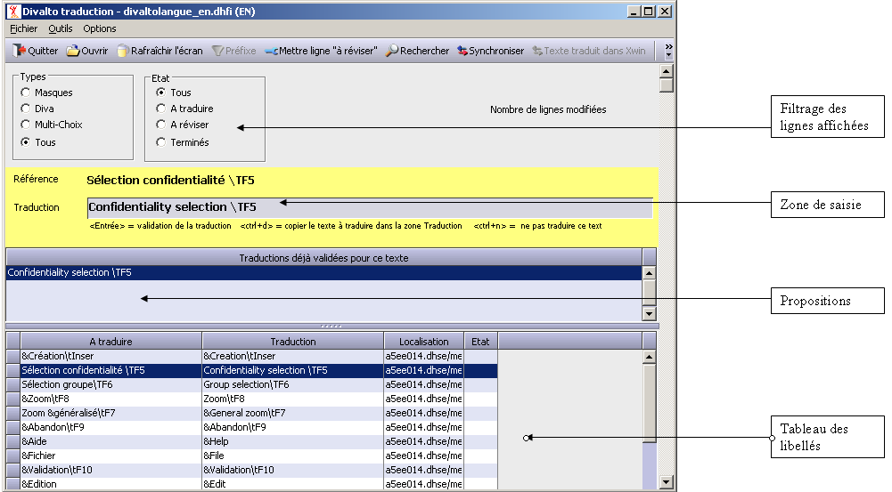

La zone "Filtrage des lignes affichées" vous permet de sélectionner les lignes sur lesquelles vous désirez travailler.
La zone "Propositions" contient les différentes traduction que vous avez déjà effectuées pour ce libellé. Rappelons qu'un libellé peut se trouver plusieurs fois dans le dictionnaire, puisque pour chaque occurrence de ce libellé dans les masques, il y a une entrée dans le dictionnaire. L'option "Propager les saisies" permet de ne saisir qu'une seule fois la traduction pour un même texte.